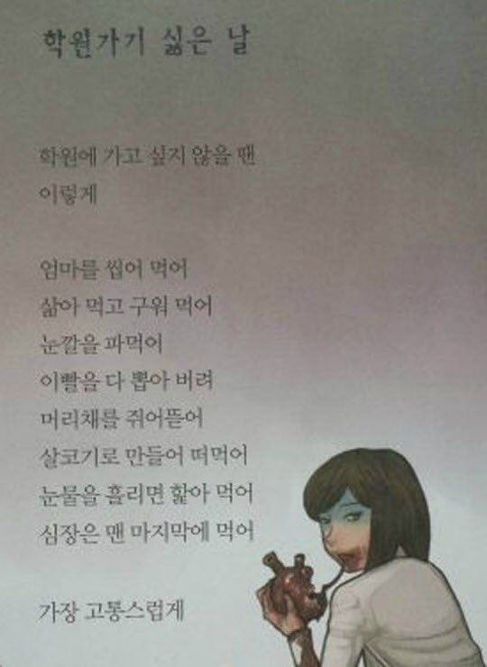

<SKY 캐슬>과 <학원가기 싫은 날>

“이 시의 외피만을 본다면 그 본질을 놓치는 것입니다.그리고 아이는 싫어하는 학원이 아닌 자기가 좋아서 선택한 미술과 복싱학원을 다닌 지 오래입니다.
학원지옥과 입시지옥에 대한 하나의 우화로서의 이 귀한 시가 아동문학사에서 정당한 평가를 받을 수 있기를 희망했기에 이 시를 출판사의 만류에도 불구하고 넣자고 했던 것입니다.
많은 관심 가져주셔서 진심으로 감사드리지만 잠시 멈추어서 자신의 마음을 들여다보았으면 합니다.”
-<학원가기 싫은 날> 저자의 부모님이 페북에 쓴 호소문-

요즘 화제의 드라마 『SKY 캐슬』을 1회부터 빠짐없이 보고 있습니다. 본방을 놓치더라도 넷플릭스로 다음날 즉각 사수할 정도로 열심히 보는 드라마는 오랜만입니다. 드라마를 보면서 제일 먼저 생각났던 것은 2015년에 초등학생 시인이 썼다가 논란이 되었던 <학원가기 싫은 날>이라는 동시입니다. 위 글은 당시 논란으로 시집이 회수되는 상황까지 가자 초등학생 시인의 부모님이 썼던 글의 일부입니다.
해당 시를 썼던 초등학생 시인의 어머니 직업이 시인이라고 하는데, 그 어머니의 영향을 얼마나 받았는지 여부는 별개로, 시인인 어머니 입장에서 “귀한 시가 아동문학사에서 정당한 평가"를 받기 위해서 해당 시를 시집에 실었다는 이야기가 인상 깊었습니다.
우리는 그 시를 정당하게 평가했을까요?
“학원지옥과 입시지옥에 대한 하나의 우화"로 썼다는 그 시에 대해서 사람들은 그 시가 가리키는 현실이 아니라 그 ‘손가락’(외피)을 보고 부정적인 평가를 하는 경우가 압도적으로 많았습니다. 시궁창인 현실을 꿰뚫어 본 초등학생 시인의 통찰력을 보는 사람들도 있었지만, 초등학생이 학원 가기 싫다고 “엄마를 씹어 먹어"라는 식의 표현을 썼다며 “패륜아”, “싸이코패스"라고 손가락질하는 사람들이 더 많았습니다. 논란이 되자 해당 시집은 출판사의 전량 회수-전량 폐기 결정으로 사라지게 됩니다.
아래 사진은 그해에 방송된 SBS <영재발굴단>에 출연한 시인 이순영입니다. 씁쓸한 웃음으로 인터뷰하는 모습입니다. 해당 영상에서는 부모님도 함께 출연해서 딸에 대한 세간의 평가에 대한 심정과 더불어 적극적인 해명도 나옵니다.

해당 시가 논란이 된 것은 일부 이해할 수 있는 측면도 있습니다. 사람마다 주관적으로 받아들이는 것이 다를 수 있기 때문입니다. 특히나 시와 함께 삽화로 쓰인 그림이 시의 내용을 인용하여 죽은 엄마의 심장을 뜯어 먹고 있는 섬뜩한 그림이기에 더욱 그렇습니다. 주 독자가 시인과 비슷한 어린이들일 가능성이 큰 동시집에 실린 그림이기에 어린이들의 정서에 문제를 끼칠 수 있다고 생각할 수 있습니다.
그러나 시인이 그 시를 통해서 보여주고자 했던 것이 과연 무엇이었나를 생각해 보면 당시의 논란은 조금은 지나친 감이 있었다고 생각합니다. 10살 남짓한 초등학생인 시인이 과연 시인의 눈으로 세상을 어떻게 보았기에 그렇게 섬뜩한 표현으로 시를 썼는지에 대해서 한번쯤 생각해 보았더라면 시인, 시, 삽화에 대한 논란은 따로 분리해 볼 수 있었을 것이라 생각됩니다. 즉, 선정적이고 잔인한 삽화 등에 대해서는 문제를 지적하고 일부 수정을 요구할 수는 있었겠지만, 시인이 시를 통해서 가리키고 있는 불편한 현실을 들춰내는 것에 대해서는 인정할 수 있지 않을까하는 것입니다.

지난해 숙명여고 사태, 수능 국어 문제 등 각종 교육 문제가 터져 나오면서 우리나라 교육에 대한 해묵은 논란이 재현되고 있습니다. 이러한 와중에 『SKY 캐슬』이 현실을 적나라하게 보여주면서 시청률이 폭발적으로 상승하기 시작하였고, 언론에서는 『SKY 캐슬』을 인용해서 신드롬에 가깝게 기사를 쏟아내고 있는 상황입니다.
『SKY 캐슬』은 여러가지 상징과 사건을 통해서 우리나라 교육현실을 우화적으로 그리고 있습니다. 1화부터 서울대 의대에 합격한 아들을 둔 엄마의 자살, 딸의 입시를 위해서 수십억원을 쓰는 등 수단을 가리지 않는 엄마와 그를 고객으로 둔 코디의 뒷조사 등 범죄를 넘나드는 행위들, 급기야 발생하는 살인사건 등등 각종 자극적인 사건들이 넘쳐납니다.

『SKY 캐슬』은 드라마가 시작할 때, 항상 실제와 관련 없는 픽션임을 강조하고 있습니다만, 많은 사람들이 이 드라마가 우리나라 교육 현실을 충분히 잘 보여주고 있다고 생각하고 있습니다. 언론에서 이 드라마와 교육문제를 대서특필하고 있는 이유가 바로 그것의 단적인 예입니다.
사람들이 『SKY 캐슬』에 열광하는 것은 기본적으로 이 드라마가 보는 <재미>가 있기 때문입니다. 그러나 이 드라마가 신문의 연예면이 아니라 사회면, 경제면, 정치면까지 장식하고 있는 것은 단순히 이 드라마의 재미뿐만 아니라 <소재>로 삼고 있는 교육 현실때문일 것입니다. “SKY 캐슬"이라는 가상의 상류층 집단에서 벌어지는 ‘자녀 입시전쟁'이 이미 다수의 사람들이 익히 체감하고 있는 현실의 문제를 상징적으로 잘 반영하고 있다는 공감대가 형성되어 있기 때문일 것입니다.
『SKY 캐슬』이 보여주는 것은 바로 <학원가기 싫은 날>이라는 시를 통해서 초등학생이 보여주고자 했던 그 현실과 별반 다를바 없습니다. <드라마>라는 장르와 <동시>라는 장르가 다르고, 그에 따라 표현하는 방식이 달랐을뿐 같은 것을 보여주고 있습니다. 시대와 부모의 욕망을 바탕으로 서울대 의대로 상징되는 최고의 대학에 합격한 아들이 자살로 부모에게 복수하는 패륜적인 사건(‘SKY 캐슬’)이 엄마의 심장을 씹어 먹고 싶을 만큼 패륜적인 표현(‘학원가기 싫은 날’)으로 달리 구현되고 있을 뿐인 것입니다. 자식들은 ‘패륜'을 저지르고 싶을 만큼 극한 스트레스 상황에 노출되어 있는데, 부모들이나 나아가 이러한 시스템을 만든 사람들은 우아하게 귀족놀음이나 하고 있다는 이야기일 것입니다.
‘입시 지옥'이라는 현실을 헤치고 나가야 하는 초등학생이 『SKY 캐슬』과 같은 현실을 직시하고 본질을 드러낸 것은 지금이라도 다시 재평가 받아야 한다고 생각합니다. 더군다나 입시와는 크게 관계 없는 교육을 받고 이루어낸 성취라면 그런 초등학생의 재능을 인정해 주고 키워주는 것이 ‘입시 지옥'에서 벗어난 성공 케이스를 만들어 준다는 측면에서도 의미가 있다고 생각합니다. 세상에 없는 것을 먼저 만들어 내는 것, 특히, 상상력이 더 중요해지는 시대에 세상을 다른 각도로 보고, 다르게 표현해 내는 것은 지금과 같은 입시위주의 교육시스템이 만들어 낼 수 없는 엄청난 재능이고, 희소한 자원입니다.
이순영 시인 같은 친구들이 더 많아지고, 사회에서 인정 받을 수록 『SKY 캐슬』과 같은 좋은 창작물이 더 많아질 수 있을 것이라고 생각됩니다. 이번 열풍이 그러한 세상을 여는데 조금이나마 기여했으면 좋겠습니다. 학부모가 되는 것이 채 10년도 남지 않는 부모의 입장에서는 더 그렇습니다.
)